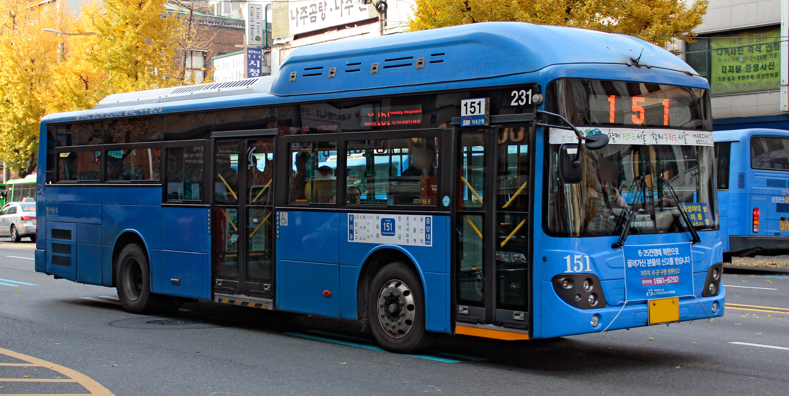
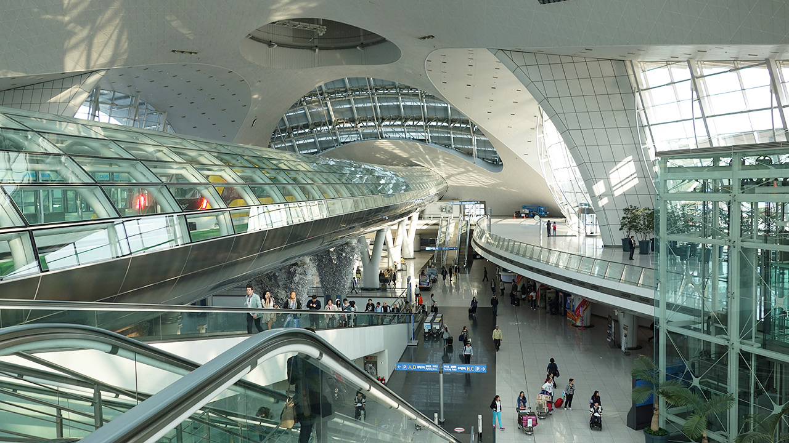

Seoul has a well developed transportation network. Its system dates back to the era of the Korean Empire, when the first streetcar lines were laid and a railroad linking Seoul and Incheon was completed. Seoul's most important streetcar line ran along Jongno until it was replaced by Line 1 of the subway system in the early 1970s. Other notable streets in downtown Seoul include Euljiro, Teheranno, Sejongno, Chungmuro, Yulgongno, and Toegyero. There are nine major subway lines stretching for more than 250 km (155 mi), with one additional line planned. As of 2010, 25% of the population has a commute time of an hour or more.
Bus

Seoul's bus system is operated by the Seoul Metropolitan Government (S.M.G.), with four primary bus configurations available servicing most of the city. Seoul has many large intercity/express bus terminals. These buses connect Seoul with cities throughout South Korea. The Seoul Express Bus Terminal, Central City Terminal and Seoul Nambu Terminal are located in the district of Seocho District. In addition, East Seoul Bus Terminal in Gwangjin District and Sangbong Terminal in Jungnang District handles traffics mainly from Gangwon and Chungcheong provinces.
Train

Seoul has a comprehensive urban railwaynetwork of 21 rapid transit, light metro and commuter lines that interconnects every district of the city and the surrounding areas of Incheon, Gyeonggi province, western Gangwon province, and northern Chungnam province. With more than 8 million passengers per day, the subway has one of the busiest subway systems in the world and the largest in the world, with a total track length of 940 km. In addition, in order to cope with the various modes of transport, Seoul's metropolitan government employs several mathematicians to coordinate the subway, bus, and traffic schedules into one timetable.  The various lines are run by Korail, Seoul Metro, Seoul Metropolitan Rapid Transit Corporation, NeoTrans Co. Ltd., AREX, and Seoul Metro Line 9 Corporation.
The various lines are run by Korail, Seoul Metro, Seoul Metropolitan Rapid Transit Corporation, NeoTrans Co. Ltd., AREX, and Seoul Metro Line 9 Corporation.
Seoul is connected to every major city in South Korea by rail. Seoul is also linked to most major South Korean cities by the KTXhigh-speed train, which has a normal operation speed of more than 300 km/h (186 mph). Another train that stops at all major stops are the Mugunghwa and Saemaeul trains.
Air
Two international airports, Incheon International and Gimpo International, serve Seoul. Gimpo International Airport opened in 1939 as Japanese Imperial Army airfield, and opened for civil aircraft in 1957. Since opening of Incheon International, Gimpo International handles scheduled domestic flights along with selected short haul international shuttle flights to Tokyo Haneda, Osaka Kansai, Taipei Songshan, Shanghai Hongqiao, and Beijing Capital. Incheon International Airport, opened in March 2001 in Yeongjong island,  is now responsible for major international flights and some domestic shuttle flights. Incheon International Airport is Asia's eighth busiest airport in terms of passengers, the world's fourth busiest airport by cargo traffic, and the world's eighth busiest airport in terms of international passengers in 2014. In 2016, 57,765,397 passengers used the airport.
Incheon and Gimpo are linked to Seoul by expressway, and to each other by the AREX to Seoul Station. High speed service via AREX opened in 30 June 2014. Intercity bus services are available to various destinations around the country.